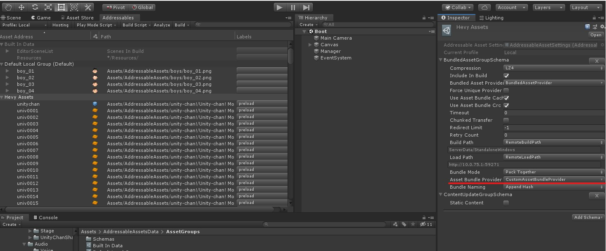

Addressable AssetsのProviderをカスタムする
前回の記事で、大量にSendWebRequestして爆死する問題で、
ここら辺のコードをカスタマイズできないのかと方法を探っていた。
というかそもそもの主目的はAddressable Assetsに暗号化機能を組み込む事だったりもするので、
やっと当初の目的にたどり着いたとも言える。
とりあえず同じ挙動をするようにしたカスタム版のコードに差し替えてみる。
さて、Addressable Assetsがどういう仕組みなのかはQiitaの
Addressable Assets Systemを完全に理解する
あたりに詳しく書いてるけど、AddressableにはResrouceManagerという物がセットで付いてくる。
Addressableそれ自体はユーザーコードで指定されたラベルとかアセット名をカタログを見ながら
ResourceLocation(実際のパス)に変換してResourceManagerにぶん投げている。
ResrouceManagerはそのAssetがどういう方法で読み込むべきかを判別して
それを各Providerにぶん投げる。
対応するProviderはAssetのロード方法（ファイルから読み込むとかネットワークから読み込むとか）を知っているので
実際のロード処理を行う。LoadAssetAsyncとかで返ってくるAsyncOperationはこのProviderが生成したもの。
で、実際にAssetBundleで使われているProviderは何かというと
UnityEngine.ResourceManagement.ResourceProviders.AssetBundleProvider
というクラスである。これのProvideあたりをゴニョゴニョカスタマイズ出来ればいいんだけど当然DLLなので編集することができない。
今回はカスタムProviderということで、AssetBundleProviderと同じ動きをするProviderを作成して差し替えてみる。
以下の2つのクラスが依存しているけど、internal classで外部からは呼べないのでこれもカスタム版を用意しなければならない。
- AssetBundleResource
- ResourceManagerConfig
今回は逆アセンブルしたコードをベースに3つのクラスを用意した。↑のクラス名を書き換えてるだけ。
- CustomAssetBundleProvider.cs
CustomAssetBundleResource.cs
CustomResourceManagerConfig.cs
これらを用意したら、AddreesableがCustomAssetBundleProviderを使うように設定を変更する。
各Packed AssetsのAddressableAssetSettingsを開いて、Asset Bundle ProviderをCustomAssetBundleProviderに変更して Build Player Contentする。

これでブレークポイントを張ると、カスタム版のProviderが呼ばれているのが確認できる。